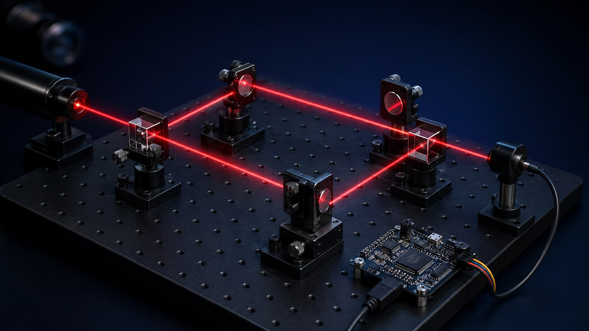

01
Foundation
Keep the optical lock.
Use Pound–Drever–Hall, bias locking, or any conventional method to maintain optical capture and keep the instrument in range. NSL does not replace it.
A conventional optical lock keeps an interferometer stable. PQSensing adds a performance layer that asks a harder question — is the instrument parked where photons, time, and quantum-noise resources actually produce the most usable measurement information?
Most precision interferometers are locked to an optical condition — a cavity resonance, a fringe point, a reflected-power null, a transmitted-power peak. That is necessary. It is not always enough.
The customer does not buy a pretty fringe. The customer buys a smaller error bar: displacement, phase, strain, rotation, acceleration, refractive index, or timing measured with less uncertainty and less wasted integration time.
NSL is for instruments that are optically locked but not measurement-optimized. The lock says stable. The noise floor says otherwise.
My interferometer is locked, but my measurement is still noisy.
A power lock sits at the fringe extremum. A noise-stationary lock sits at the slope-null of Vnorm(δ) = Nband(δ) / P(δ)k. Whenever real-world noise has structure that isn't aligned with the fringe — and it rarely is — those two operating points are not the same. Drag the controls.
Important. This is a pedagogical model, not bench data. It uses analytic forms for P, Nband, and Vnorm to demonstrate the slope-null thesis. The validation sprint replaces these analytic curves with measured ones from a tabletop Mach-Zehnder.
NSL is intended to ride on top of established optical locking methods such as PDH, not pick a needless fight with them. PDH keeps the cavity or interferometer captured. NSL trims the operating point toward the quietest useful measurement condition. DPI is the channel through which controlled fields — including quantum resources — enter that loop.
Use Pound–Drever–Hall, bias locking, or any conventional method to maintain optical capture and keep the instrument in range. NSL does not replace it.
Compute normalized measurement-band noise and servo the system toward an operating point where small detuning errors no longer cause first-order noise degradation. This is the technical wedge.
DPI gives the dark port a job — calibration tones, codes, or squeezed vacuum — and recovers them at the output. It is how NSL accesses quantum-noise control in practice.
Read the detector stream y(t) from a photodiode, balanced detector, homodyne receiver, or related interferometric readout.
Estimate band-limited noise Nband, an optical power metric P, and form the normalized objective.
Apply a small operating-point dither to δ outside the protected measurement band so the loop can taste the local slope.
Synchronously demodulate Vnorm against the dither reference to estimate dVnorm/dδ.
Drive the actuator toward dVnorm/dδ ≈ 0 while a power-floor penalty and mislock-recovery state machine guard the loop.
Hold that quietest useful operating point so further photon integration continues to shrink the measurement error bar instead of collecting drift.
For a photon-limited phase measurement, the relevant Cramér-Rao-style relation is approximately:
A lower and more stable Vnorm means the same photon flux Ṅγ and integration time T produce a smaller phase-error variance. The same precision is reached faster, or the same time produces tighter results, or tighter results are reached with less optical power.

In a conventional interferometer the dark input is treated as unused, or as a passive vacuum input. DPI uses it intentionally. A known phase waveform g(t), pilot tone, code, chirp, coherent auxiliary field, or squeezed vacuum is injected through the dark mode and recovered at the output by synchronous detection, correlation, matched filtering, or homodyne readout.
In the PQSensing stack, DPI is not a parallel product. It is the channel that lets NSL deliver controlled calibration signals into the loop — and, when squeezed vacuum is the injected resource, the channel that turns quantum-noise control from a lab demonstration into something a feedback loop can act on.
If the physical quantity can be converted into an optical phase, path-length, quadrature, or time-delay change, NSL may move it from buried in noise to recoverable in usable integration time.
Mirror motion, MEMS displacement, wafer-stage position, precision-machine vibration, optomechanical readout.
Fiber strain, structural deformation, composite stress, shape sensing, pressure-vessel and pipeline strain.
Proof-mass motion, cantilever force, membrane pressure, acoustic-diaphragm motion, hydrophone-style sensing.
Sagnac-style rotation, fiber-gyro readout, GPS-denied navigation support, platform stabilization.
Trace-gas detection, fluid contamination, biosensing, lab-on-chip refractive-index shifts, molecular binding.
Sub-shot-noise phase shifts, squeezed-light readout, low-variance quadrature tracking, dark-port quantum resources.
Dark-port code recovery, matched-filter timing, correlation peaks, multiplexed instrument identification.
Not magic. Not "measure anything." The claim is sharper — preserve the measurement condition so small interferometric signals can be recovered sooner and with less noise-floor wandering.

The first milestone is intentionally lean. No squeezed-light source is required to validate the core control principle. Build a classical MZI, sweep the operating point, map P, Nband, and Vnorm, inject controlled detuning jitter, and compare a conventional power lock against NSL.
Validation targets, not guaranteed product specifications. The point is to produce defensible traces that prove or kill the control thesis.
Each rung is a defined deliverable. Each one earns the next. Capital is sized to the evidence required for the next conversation, not to the founder's appetite.
Classical tabletop MZI. Compare power lock vs NSL under controlled jitter. Produce the first defensible data package.
Currently raising · open to angel, prize, or non-dilutiveBetter detectors and actuators, real-time DSP host, wider δ-sweep coverage, characterization across two or three real-world disturbance regimes.
Federal non-dilutive on the same control thesis. Submission in progress with NSF and DoD agency tracks. KU advisor relationship in development.
Hardened firmware/IP layer for an OEM partner platform. Possible squeezed-light/PIC integration through university lab. Licensing conversations begin in earnest.
Peterson Quantum Sensing, LLC is currently a single-founder operation headquartered in Hugoton, Kansas, with the operating posture of a research program rather than a venture-funded company. That is intentional: the next milestone is evidence, and evidence costs ten thousand dollars, not ten million.
The path forward includes a planned advisor relationship with Dr. Rongqing Hui (University of Kansas, ITTC) to add institutional depth on the photonics and quantum-optics side, and an active SBIR Phase I proposal addressing the same MZI validation thesis.
For partners who would rather listen on a drive than read on a screen — a concise overview of the approach, the sprint, and why noise-stationary control matters.
Download audio (.m4a)Sprint partners, OEM contacts, university collaborators, and SBIR reviewers — all welcome.